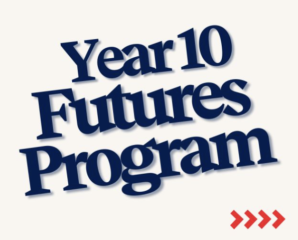
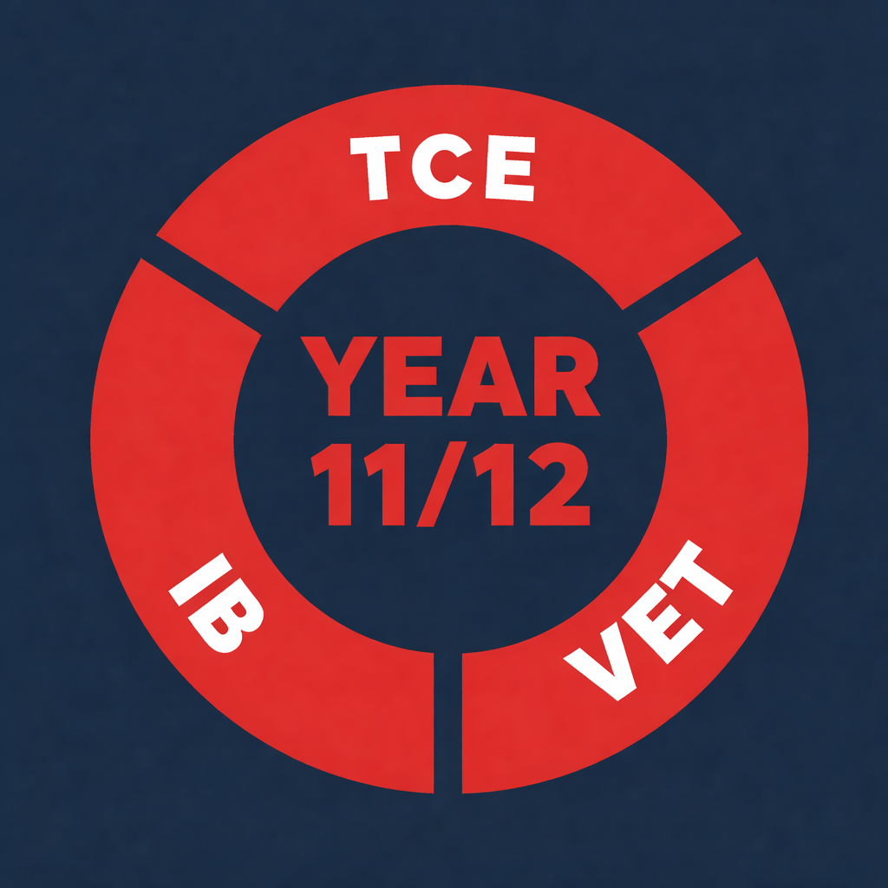

Year 9 Program
Aim: Explore identity, relationships, spirituality, and service while uncovering the adult I want to become.

Welcome to my portfolio. This space maps my growth through Year 9 to Year 12, capturing personal reflection, service, and pathway planning.
Learner • Leader • Future ReadyI am Ruben Sutton, a reflective and curious learner focused on making the most of opportunities, building strong relationships, and having a positive impact on others.
Through my learning journey, I have developed resilience, gratitude, and a clearer vision for life beyond school. I value service, collaboration, and steady growth.
Aim: Explore identity, relationships, spirituality, and service while uncovering the adult I want to become.
Aim: Build skills, reflect on learning, and connect academic study and co-curricular experiences with future pathways.

Aim: Follow one or more streams throughout Years 11 and 12, preparing for life beyond The Friends' School.
